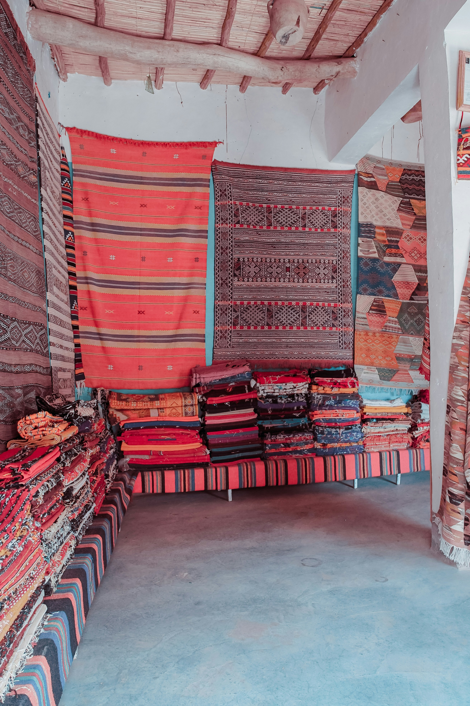

Caroline Steve
Location: Nyeri Town,Skuta
Years of Experience: 20+ Years
Featured Products
Vitenge Lesos
Ksh.30000
Blue striped textile

Ksh.1050
Blue flowered ankara

Ksh.1200
About the Artisan
Caroline is acknowledged as one of the best Textile working Local artisans in not only Nyeri but also other counties. She deals with any kind of textile work.She is fully dedicated to her work and has an end goal of ensuring that all her customers are fully satisfied.You can reach her through all her contact information below.
Phone number: 0700866794